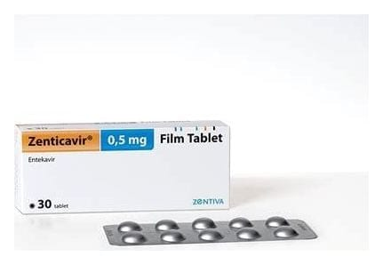

Zenticavir 0,5 mg Film Kaplı Tablet, 30 Adet

Ne için kullanılır
KT · Bölüm 1ZENTİCAVİR 0,5 mg Film Kaplı Tablet, beyaz ya da beyaza yakın, yuvarlak, bikonveks, her iki yüzü düz, film kaplı tabletlerdir. Her kutuda 30 tablet vardır.
ZENTİCAVİR 0,5 mg Film Kaplı Tabletlerin her biri etkin madde olarak 0,5 mg entekavire eşdeğer 0,533 mg entekavir monohidrat içerir.
ZENTİCAVİR antiviraller olarak adlandırılan bir ilaç grubuna dahildir. ZENTİCAVİR, erişkinlerde kronik (uzun süreli) hepatit B virüsü (HBV) enfeksiyonunun tedavisinde kullanılır.
ZENTİCAVİR ayrıca vücut ağırlığı en az 32,6 kg olan çocuklar ve ergenlerde kronik (uzun süreli) Bu ilacı kullanmaya başlamadan önce bu KULLANMA TALİMATINI dikkatlice okuyunuz, çünkü sizin için önemli bilgiler içermektedir. • Bu kullanma talimatını saklayınız. Daha sonra tekrar okumaya ihtiyaç duyabilirsiniz. • Eğer ilave sorularınız olursa, lütfen doktorunuza veya eczacınıza danışınız. • Bu ilaç kişisel olarak sizin için reçete edilmiştir, başkalarına vermeyiniz. • Bu ilacın kullanımı sırasında, doktora veya hastaneye gittiğinizde doktorunuza bu ilacı kullandığınızı söyleyiniz. • Bu talimatta yazılanlara aynen uyunuz. İlaç hakkında size önerilen dozun dışında yüksek veya düşük doz kullanmayınız.
HBV enfeksiyonunu tedavi etmek için kullanılır. ZENTİCAVİR karaciğeri hasar görmüş ancak hala düzgün çalışan (kompanse karaciğer hastalığı) çocuklarda kullanılabilir.
Hepatit B virüsünün neden olduğu enfeksiyon, karaciğerinize zarar verebilir. ZENTİCAVİR vücudunuzdaki virüs miktarını azaltır ve karaciğerinizin durumunu iyileştirir.
ZENTİCAVİR, erişkinlerde hepatit B virüsü (HBV) enfeksiyonunun tedavisinde kullanılır. Hepatit B virüsünün neden olduğu enfeksiyon, karaciğerinize zarar verebilir. ZENTİCAVİR vücudunuzdaki virüs miktarını azaltır ve karaciğerinizin durumunu iyileştirir.